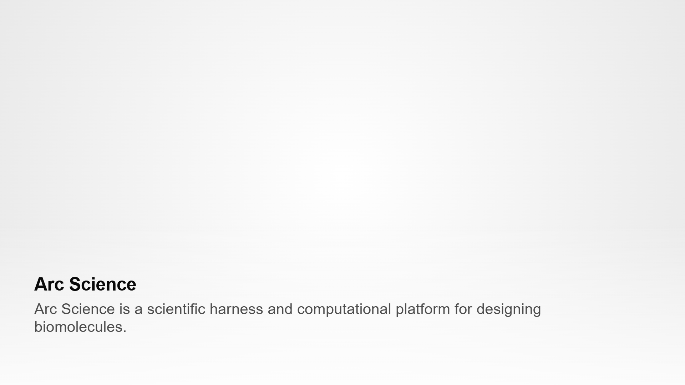
Arc Science is a scientific harness and computational platform for designing biomolecules.
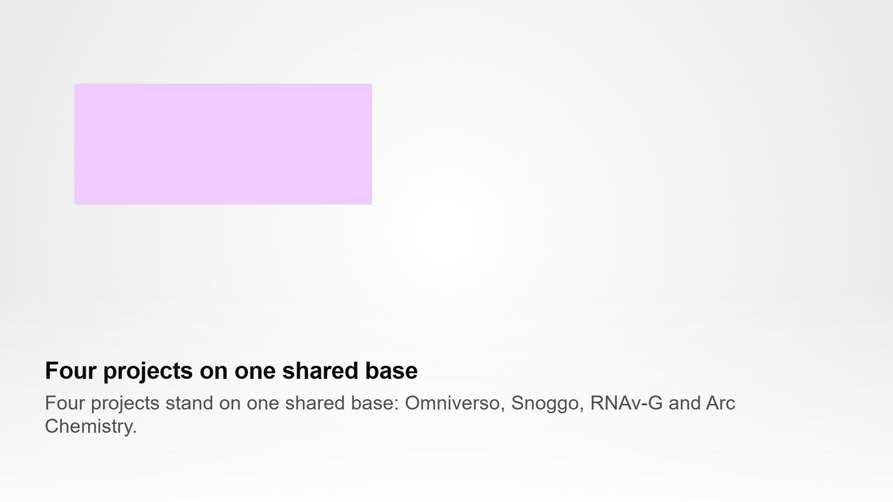
Four projects stand on one shared base: Omniverso, Snoggo, RNAv-G and Arc Chemistry.
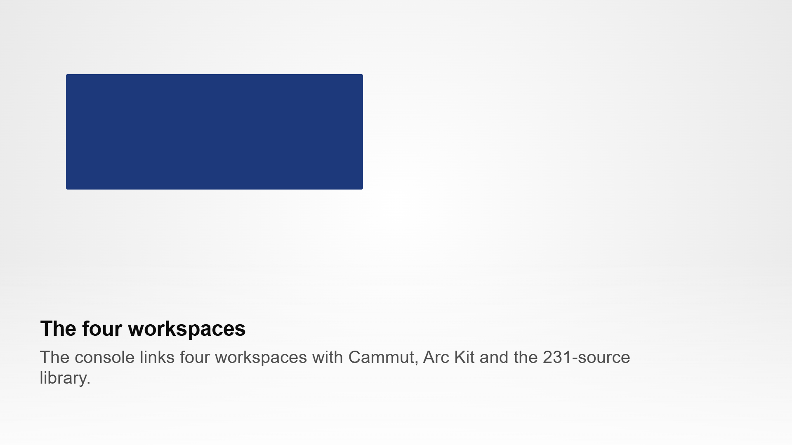
The console links four workspaces with Cammut, Arc Kit and the 231-source library.
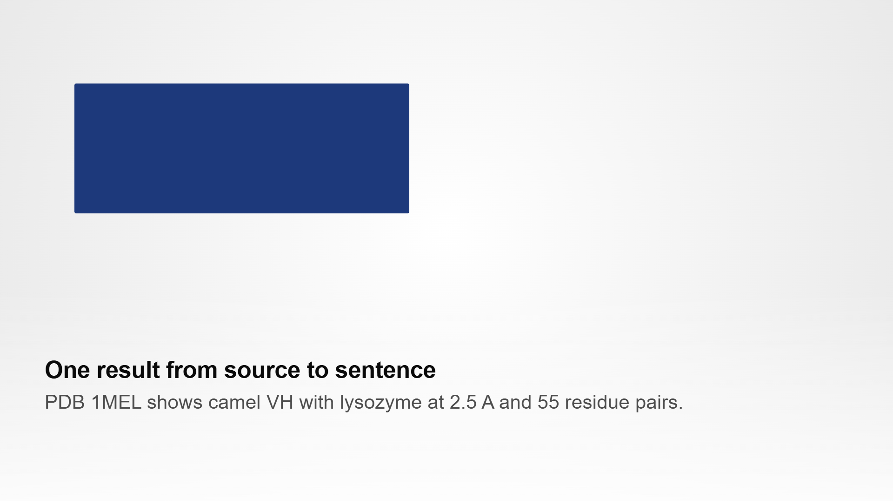
PDB 1MEL shows camel VH with lysozyme at 2.5 A and 55 residue pairs.
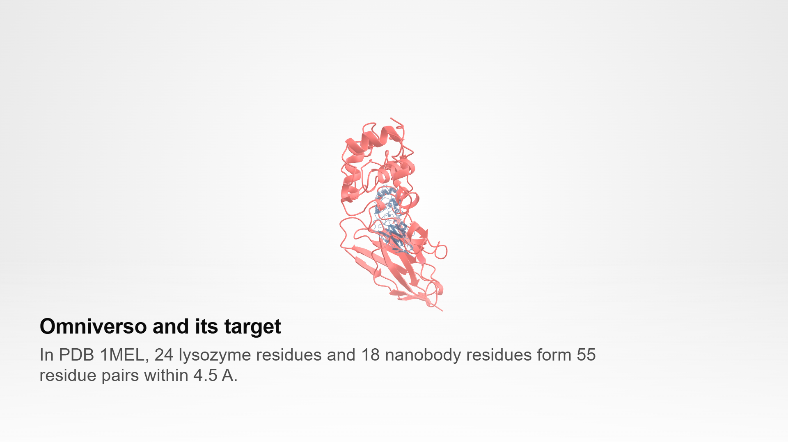
In PDB 1MEL, 24 lysozyme residues and 18 nanobody residues form 55 residue pairs within 4.5 A.
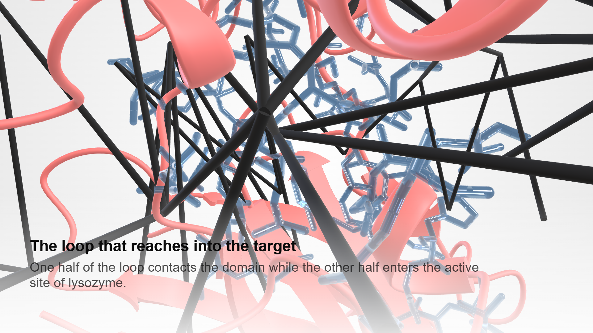
One half of the loop contacts the domain while the other half enters the active site of lysozyme.
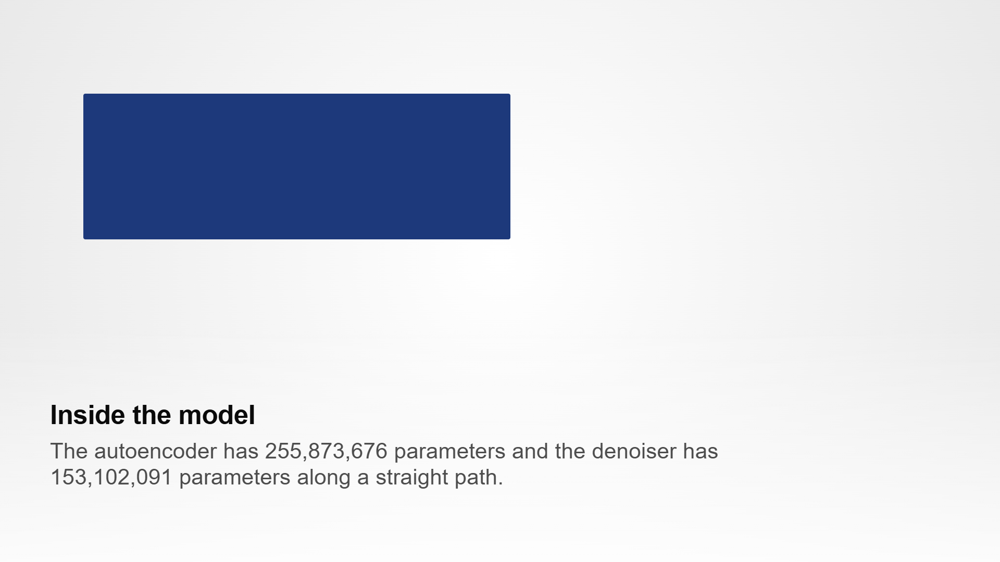
The autoencoder has 255,873,676 parameters and the denoiser has 153,102,091 parameters along a straight path.
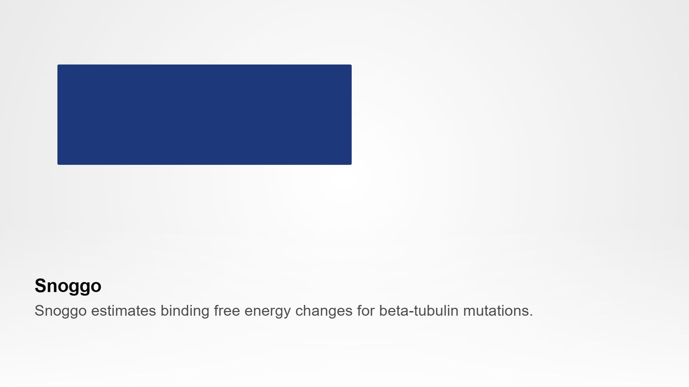
Snoggo estimates binding free energy changes for beta-tubulin mutations.
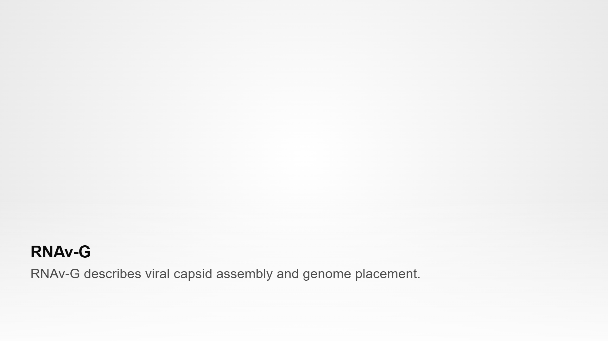
RNAv-G describes viral capsid assembly and genome placement.
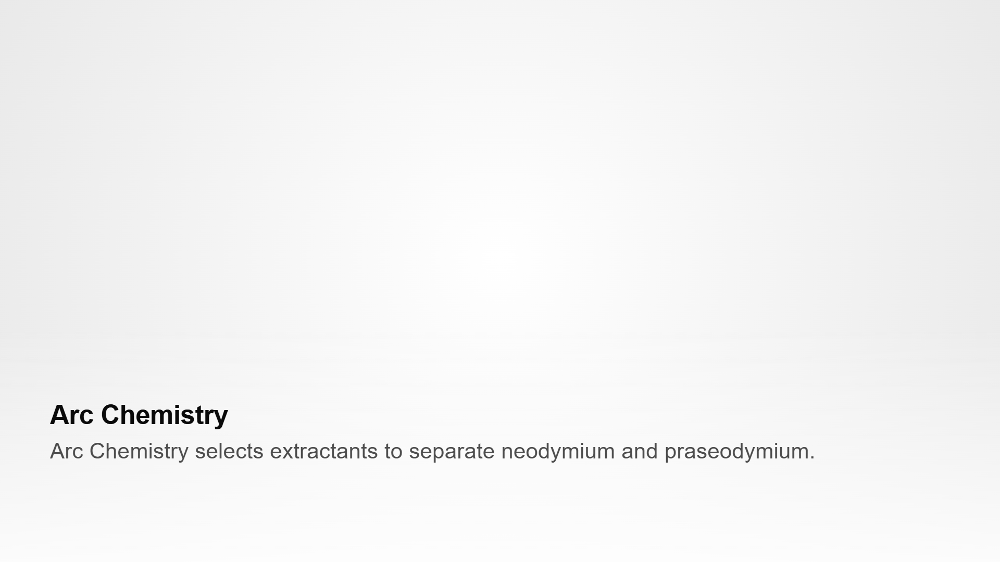
Arc Chemistry selects extractants to separate neodymium and praseodymium.
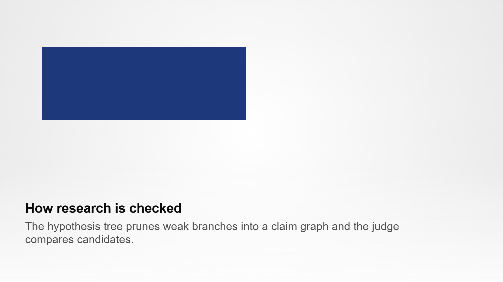
The hypothesis tree prunes weak branches into a claim graph and the judge compares candidates.
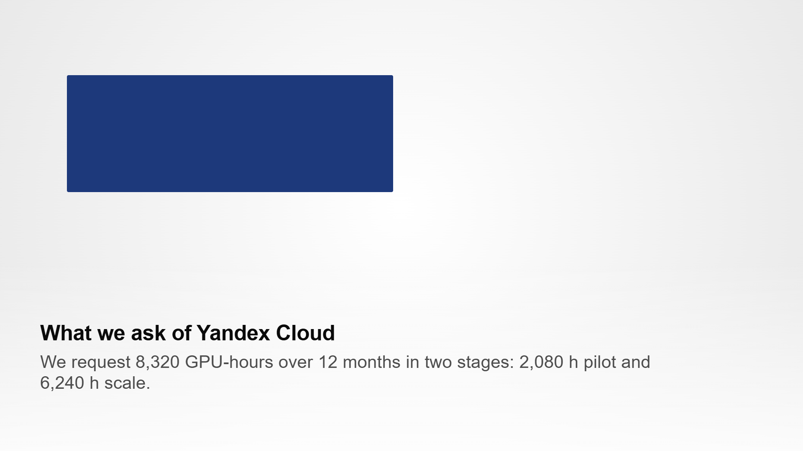
We request 8,320 GPU-hours over 12 months in two stages: 2,080 h pilot and 6,240 h scale.